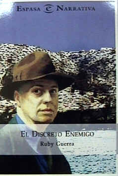

|
|


|
Ruby
Guerra ha escrito una novela de singular estructura y vívida trama
en la cual narra sucesos que al entrelazarse en un
atractivo cuerpo de ficción, se constituyen como núcleos de reflexión
acerca de la realidad actual de nuestra región y, principalmente, de la
otra Costa y Cumaná. Con el título El discreto enemigo la obra fue seleccionada para integrar la colección "Narrativa" de la editorial ESPASA. Su lanzamiento al público lector cumanés tuvo lugar en sencillo pero significativo acto que se realizó en la librería Kuaimare el viernes 18 de enero a las 7 p.m. La
presentación estuvo a cargo del profesor Silvio Orta. A su juicio, Ruby
Guerra representa la vigorización y actualización de la narrativa con
tema y ambiente sucrense, como consecuencia de su entrega plena al oficio
narrativo. Los hechos allí relatados transcurren entre “la otra
Costa” y la ciudad de Cumaná, principalmente. En
un mundo poblado por gentes sencillas, se tejen los contactos y acciones
del narcotráfico, que derivan en crímenes y conflictos diversos. Los
temas del amor y del sexo también hallan registro en las notables páginas
de esta obra, en la que sobresale, sin embargo, la búsqueda de lo
esencial del ser humano y su sociedad. La recomendamos a los lectores. Silvio Orta |
 “EL
DISCRETO ENEMIGO” LA NOVELA DEL SUCRE DE NUESTROS DÍAS |